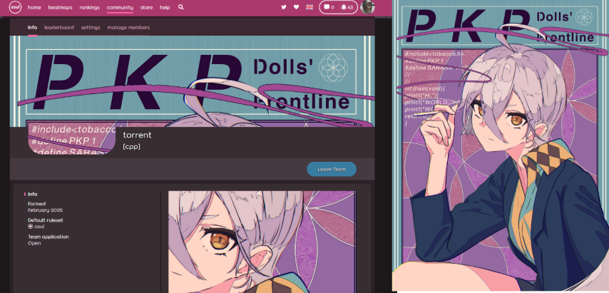

Upload an image file and this website will return the image cut up to upload as the header, flag, and decription, which should align with the original image on the osu! team page. It will also try to resize all 3 elements as best as it can to the uploading requirements.
Example:
Please use a vertical image file, else stuff breaks :p
My user page is wait im washed. Mutual with me!